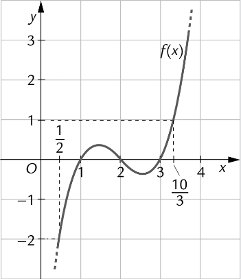
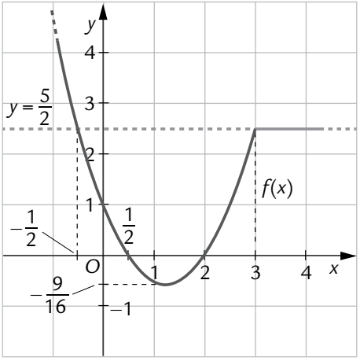

Correzione commentata e svolgimento passo-passo.


Numerazione corretta e schemi di risoluzione.
| Esercizio | Soluzione Finale |
|---|---|
| Verifica A - Esercizio 1 Inquadrata |
$x \in [\frac{2}{9}, 1]$ |
| Verifica A - Esercizio 2 Letture grafici |
F1.png: a) $x \leq 1 \lor 2 \leq x \leq 3$ | b) $x > 10/3$ | c) $1 < x < 2 \lor 3 < x < 10/3$ | d) $x < 1/2$ F2.png: a) $1/2 \leq x \leq 2$ | b) $x = -1/2$ | c) $x > -1/2$ | d) Sempre vera |
| Verifica A - Esercizio 3 Fratta |
$x \in (-\infty, \frac{1}{4}] \cup (2, 3)$ |
| Verifica A - Esercizio 4 Sistema |
$\emptyset$ (Insieme Vuoto) |
| Verifica A - Esercizio 5 Problema |
a) 27, 30 | b) $h \in (0, 2]$ |
| Verifica B - Esercizio 1 Inquadrata |
$x \in (-\infty, \frac{2}{9}] \cup [1, +\infty)$ |
| Verifica B - Esercizio 2 Letture grafici |
F1.png: a) $x \leq 1 \lor 2 \leq x \leq 3$ | b) $x > 10/3$ | c) $1 < x < 2 \lor 3 < x < 10/3$ | d) $x < 1/2$ F2.png: a) $1/2 \leq x \leq 2$ | b) $x = -1/2$ | c) $x > -1/2$ | d) Sempre vera |
| Verifica B - Esercizio 3 Fratta (Inversa) |
$x \in (-\infty, \frac{1}{4}] \cup (1, 2] \cup [3, +\infty)$ |
| Verifica B - Esercizio 4 Sistema (Quadrato perfetto) |
$\emptyset$ (Insieme Vuoto) |
| Verifica B - Esercizio 5 Problema |
Identiche alla A. |